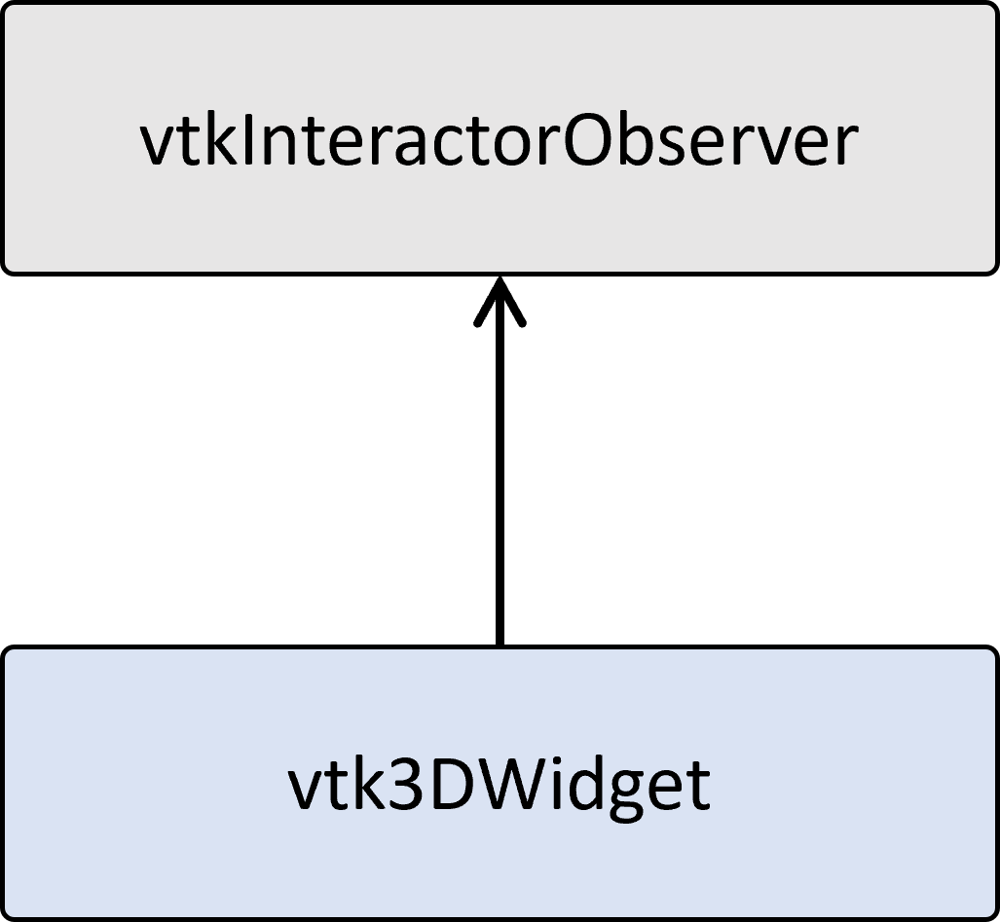
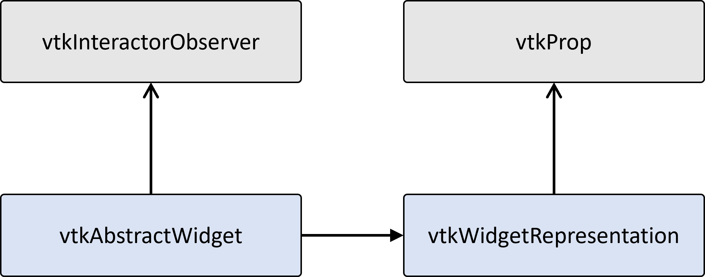

VTK Widget
In three-dimensional visualization applications, VTK Widgets allow users to interact with visible components. Users can manipulate 3D data and models through these widgets by clicking, dragging, and pressing keys. These widgets make user interactions in the 3D scene intuitive and straightforward.
Design Concept of VTK Widget
vtk3DWidget
The design of VTK Widgets was introduced from VTK version 5.0. In the initial design, Widgets were derived from vtk3DWidget. In the implementation of vtk3DWidget subclass, the widget contains the logic for event handling and representation. The widgets have hardwired event bindings and and this action/event binding cannot be changed at the run time. However, this design led to two problems:
Highly coupling between event handling and representation:
The event handling logic of the widgets is tightly coupled with their representation, making it impossible to use different representations for the same event handling logic. For example, for a widget that measures distance, it should be possible to represent its endpoints either using crosses or spheres as representations.
Event binding cannot be changed:
The event binding using hardwiring prevents the program from changing event bindings during execution based on user preferences or device differences. For example, replacing a left-click with a right-click to trigger widget selection should be feasible.
Therefore, starting from VTK version 5.1, VTK Widgets were redesigned to address the above issues, while still retaining vtk3DWidget and its subclasses.

vtkAbstractWidget and vtkWidgetRepresentation
In the new design, VTK Widgets are composed of two components: vtkAbstractWidget and vtkWidgetRepresentation. Both vtkAbstractWidget and vtk3DWidget are derived from vtkInteractorObserver, while vtkWidgetRepresentation is derived from vtkProp. Their hierarchical relationship is illustrated in the following diagram.
Decouple Event Handling from Representation
The major purpose of introducing vtkAbstractWidget and vtkWidgetRepresentation is to split VTK Widgets into two components:
vtkAbstractWidget: Performing event processing, defining event bindings, and invoking callback functions.
vtkWidgetRepresentation: It defines the geometric appearance of the widget, provides a dedicated API for interacting with the widget, and contains the logic for performing operations on and selecting the widget.
Such decoupling allows for changing the widget’s appearance without the need to reimplement the event handling logic. Additionally, in this design, the widget knows its representation, while the representation is unaware of the widget’s existence. This ensures that the representation can remain independent of any event handling logic.
Although the representation is externally viewed as a single vtkProp, it can actually be composited of multiple vtkProps.
The following diagram provides a simple description of the association between vtkAbstractWidget and vtkWidgetRepresentation and their related classes. After the VTK events are passed to the widget by vtkRenderWindowInteractor, the widget calls methods on its representation based on event bindings. Then, the representation updates its state and triggers the view re-rendering.

Flexible Event Bindings
In the design of vtkAbstractWidget, VTK events and widget events are further separated. When VTK events are passed to the widget, the vtkWidgetEventTranslator translates VTK events into widget events. Simultaneously, the vtkWidgetCallbackMapper maps widget events to various action functions. The specific process is illustrated in the diagram below:
vtkWidgetCallbackMapper needs to invoke methods on specific widget subclasses, so the callbacks are implemented by static class methods on the subclass of vtkAbstractWidget.

This way, after the widget is created, it becomes possible to further modify event bindings according to the usage scenario. Taking vtkSliderWidget as an example, you can replace the default left-click event with a right-click event and bind it to widget events:
1 | auto sliderWidget = vtkSliderWidget::New(); |
Implement transformWidget

In the upcoming implementation, we will create a custom transform widget. Users will be able to use this widget to perform translation and rotation operations in three directions on a model.
Requirements
To perform translation and rotation operations on the model using the widget, the widget’s representation (appearance) needs to have:
- Geometry for translation axes in three directions.
- Geometry for rotation rings in three directions.
And the interaction logic for events is also defined as follows.
- When the mouse moves over the widget, the corresponding geometry is highlighted. Conversely, when the mouse leaves the widget, the highlighting is removed.
- Clicking and dragging the mouse on the translation axes geometry performs translation in that direction.
- Clicking and dragging the mouse on the rotation ring geometry performs rotation in that direction.
- When the widget is moved, corresponding translation and rotation operations are applied to the target model.
In this implementation, the code we need to complete include:
- transformRepresentation.cpp/hpp: Subclass of vtkWidgetRepresentation, defining the widget’s representation.
- transformWidget.cpp/hpp: Subclass of vtkAbstractWidget, responsible for event handling and defining event bindings.
- main.cpp: Serves as a client example, demonstrating how to create the widget and add callback functions to update the target model.”
Event Bindings
Firstly, in the constructor of the transformWidget, we create event bindings. Specifically, we bind VTK events for left-click and mouse movement to widget events for selection (vtkWidgetEvent::Select and vtkWidgetEvent::EndSelect) and movement (vtkWidgetEvent::Move). We also map widget events to their respective callback functions (transformWidget::SelectAction, transformWidget::EndSelectAction, transformWidget::MoveAction), where we implement the event handling logic.
1 | /* transformWidget.cpp */ |
Geometric Representation
The widget’s transformRepresentation consists of multiple vtkProps. Inside transformRepresentation, we define rotate actor and translate actor to represent the geometry of the translation axes and rotation rings. Since the geometry of translation axes and rotation rings are also composed of multiple basic vtkProps, we use vtkAssembly here to collect them as vtkProps.
1 | /* transformRepresentation.hpp */ |
Additionally, an enum value is defined to represent the current state of the widget.
1 | /* transformRepresentation.hpp */ |
Within transformRepresentation, there are several important functions: ComputeInteractionState, BuildRepresentation, and GetTransform.
ComputeInteractionState: Compute and update the widget’s state based on the display coordinates (x, y) of the rendering window.
1
2
3
4
5
6
7
8
9
10
11
12
13
14
15
16
17
18
19
20
21
22
23
24
25
26
27
28
29
30
31
32
33
34
35/* transformRepresentation.cpp */
int transformRepresentation::ComputeInteractionState(int x, int y,
int vtkNotUsed(modify))
{
if (!this->Renderer || !this->Renderer->IsInViewport(x, y))
{
this->InteractionState = INTERACTIONSTATE::outside;
return this->InteractionState;
}
auto path = this->GetAssemblyPath(x, y, 0., picker_);
if (path != nullptr)
{
currActor_ =
reinterpret_cast<vtkProp3D *>(path->GetFirstNode()->GetViewProp());
if (currActor_ == rotateActors_[0])
{
this->InteractionState = INTERACTIONSTATE::onXRing;
}
// ...
else if (currActor_ == translateActors_[0])
{
this->InteractionState = INTERACTIONSTATE::onXArrow;
}
// ...
}
else
{
this->InteractionState = INTERACTIONSTATE::outside;
}
return this->InteractionState;
}BuildRepresentation: Update the geometric representation of the widget based on its current state and other conditions. Here, we need to adjust the positions and orientations of various vtkProps based on the widget’s state and the mouse position. The specific calculation methods are not detailed here.
1
2
3
4
5
6
7
8
9
10
11
12
13
14
15
16
17
18
19
20
21
22
23
24
25/* transformRepresentation.cpp */
void transformRepresentation::BuildRepresentation()
{
if (this->GetMTime() > this->BuildTime ||
(this->Renderer && this->Renderer->GetVTKWindow() &&
(this->Renderer->GetVTKWindow()->GetMTime() > this->BuildTime ||
this->Renderer->GetActiveCamera()->GetMTime() > this->BuildTime)))
{
if (this->InteractionState == INTERACTIONSTATE::onXRing ||
this->InteractionState == INTERACTIONSTATE::onYRing ||
this->InteractionState == INTERACTIONSTATE::onZRing)
{
// ...
}
else if (this->InteractionState == INTERACTIONSTATE::onXArrow ||
this->InteractionState == INTERACTIONSTATE::onYArrow ||
this->InteractionState == INTERACTIONSTATE::onZArrow)
{
// ...
}
this->BuildTime.Modified();
}
}GetTransform: Provide a function to obtain the overall widget transform, allowing external code to retrieve a vtkTransform object and use it to update the target model.
1
2
3
4
5
6/* transformRepresentation.cpp */
void transformRepresentation::GetTransform(vtkTransform *t)
{
t->SetMatrix(dummyActor_->GetUserMatrix());
}
Update Target Model
In main.cpp, we need to create the widget and add callback functions to update the target model. When creating the model, we use the default representation on this widget, which is transformRepresentation. Then, we use the PlaceWidget method to set the initial position of the widget.
After different transformRepresentations are implemented, we can also use SetRepresentation method to specify different representations for the widget.
1 | /* main.cpp */ |
There are two ways to add callbacks using AddObserver method:
Instantiate a vtkCallbackCommand, set your custom callback function using the SetCallback method, and assign it to this vtkCallbackCommand object.
Derive a subclass from the vtkCommand class and override the Execute method.
In this implementation, we have adopted the second approach, deriving a subclass from the vtkCommand class in main.cpp. Below is the definition and usage of the transformCallback class.
1 | /* main.cpp */ |
With the transformCallback class, we store a vtkActor as the target model and override the Execute method to perform updates on the model. Finally, to update the target model in real-time while interacting with the widget, we use AddObserver to add callbacks that trigger the update of the target model.
By now, the process and usage of implementing a simple transformWidget in VTK are complete. You can also customize the representation and event bindings according to your specific use cases to meet user requirements. For the complete source code, please refer to GitHub.